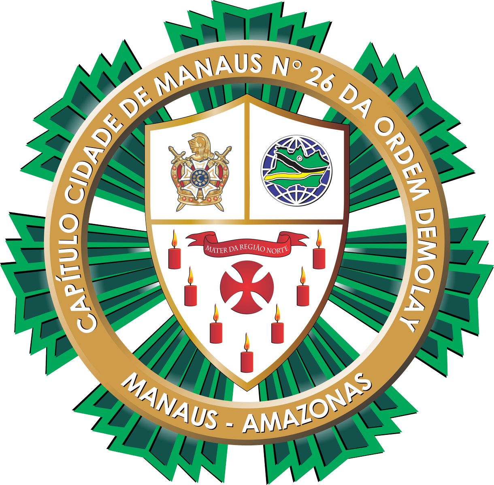

História do Capítulo Cidade de Manaus nº 26
O Capítulo Cidade de Manaus nº 26 tem importância histórica para a Ordem DeMolay no Amazonas. Fundado em 07 de janeiro de 1985 e instalado em 24 de novembro de 1985, o capítulo mantém uma trajetória de liderança e serviço à comunidade.
Após um período de inatividade, o capítulo foi retomado em 22 de março de 2010 e, desde então, permanece ativo como um dos pilares do movimento DeMolay em Manaus.
Loja Patrocinadora
Rio Negro nº 4 (GLOMAM)
Reuniões
Todos os sábados (exceto último) às 15h
Legado e Atividades
O capítulo tem uma forte presença social, participando de ações como abraços solidários, sopão comunitário e outras iniciativas que fortalecem o compromisso com a cidadania e o trabalho coletivo.
A base histórica do Capítulo Cidade de Manaus inclui uma lista de lideranças dedicadas que ajudaram a recuperar e manter o capítulo ao longo das décadas.
Gestões recentes
- 13ª gestão: Dickson Matos
- 14ª gestão: Jonathan Santiago
- 15ª gestão: Breno Soares
- 16ª gestão: Matheus Soares
- 17ª gestão: João Siqueira
- 18ª gestão: Igson Andrade
- 19ª gestão: Fábio Marcelo
- 20ª gestão: João Rabelo
- 21ª gestão: Gabriel Paiva